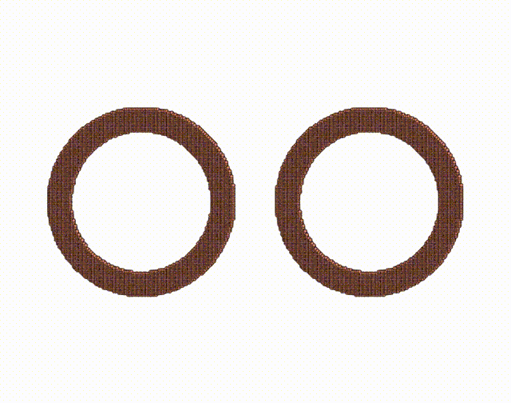
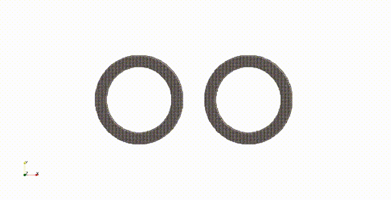

模拟视频
SPH 冲击动力学 · 纯引力与暗物质星系模拟
橡胶环对撞
橡胶环对撞用于检验 SPH 固体力学模拟中的拉伸不稳定性。人工应力能够抑制 SPH 固有的拉伸不稳定性，抑制非物理断裂发生。


DART 碎石堆小行星撞击
以 NASA 的 DART 双小行星重定向测试为背景，通过 SPH 撞击模拟反推撞击效果，SPH 粒子 1100 万个。 包含巨石与分化层的碎石堆小行星结构。
星系引力干涉模拟
模拟由恒星与暗物质晕组成的星系间引力干涉产生的潮汐尾结构，粒子个数 500 万个。
冲击与损伤
模拟超高速撞击高孔隙度浮石，检验代码多物理模型相互耦合下的鲁棒性，SPH 粒子 120 万个。